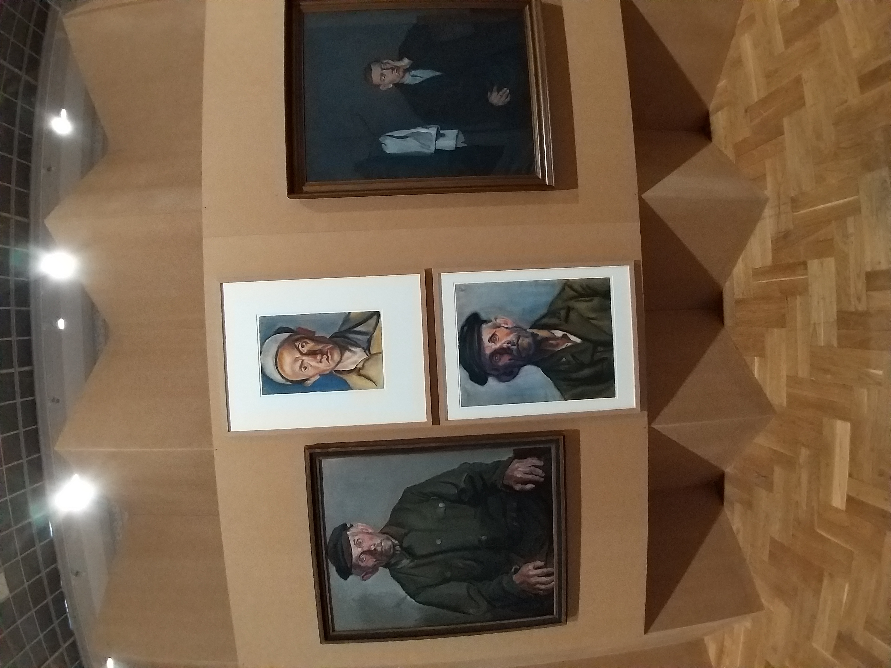
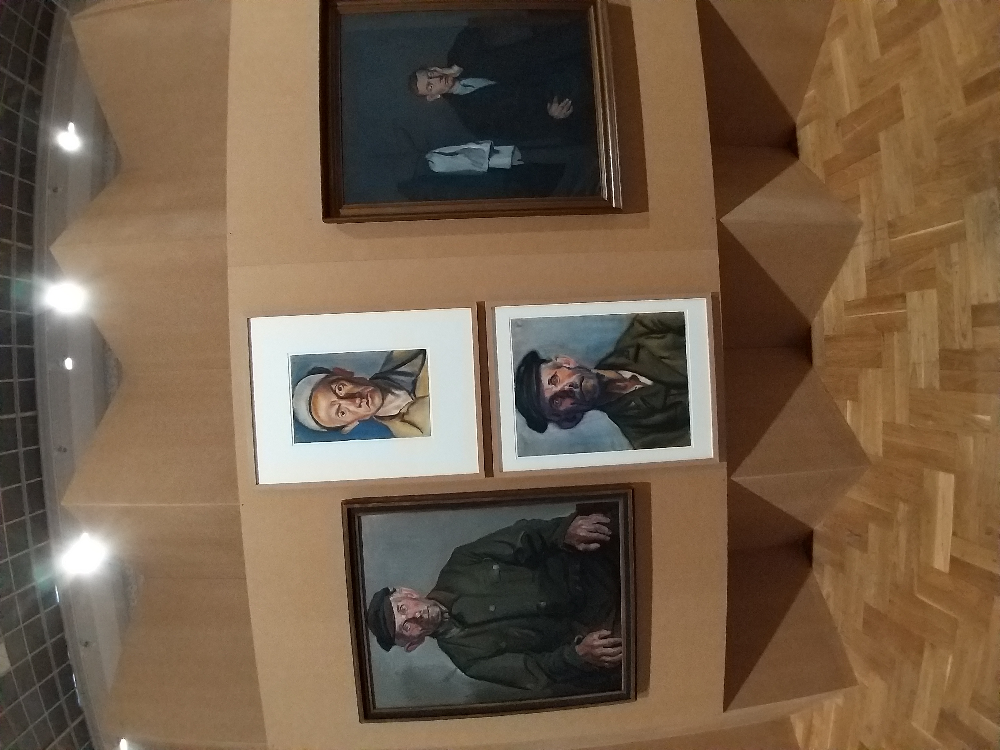

Cold revolution exhibit
In late June we visited an exhibition in the Zachęta art gallery. It
featured art and functional items from Eastearn European countries
in the 1950s. It showed how artists viewed the transition to
socialism and the rising importance of the working class. It
featured many paintings and sculptures from Hungary, East Germany,
Poland and Czechoslovakia. We found it immensely interesting, since
the last unit we studied in history before summer was the USSR. We
were surprised by the art style of the pieces. We have primarily
looked at propaganda before, thus it was surprising seeing similar
visual elements in fine art. Geometric figures,
agricultural/industrial subject matter and bright colors presented
the hope for a better future that people felt. However, the mood of
the exhibition was balanced out by cold sketches and paintings
showing the atrocities of the war and the depressing rebuilding of
cities. In every room there were a few film projectors that showed
German and Hungarian movies from the 50s and late 40s. We really
liked the juxtaposition of different media (film, painting and
sculpture) that portrayed the same subject matter. The exhibition
was huge and it was a great experience. Seeing art from that period
in a textbook is completely different from standing in front of a
physical piece, wondering about the repression and worry that many
of these artists felt.

 
